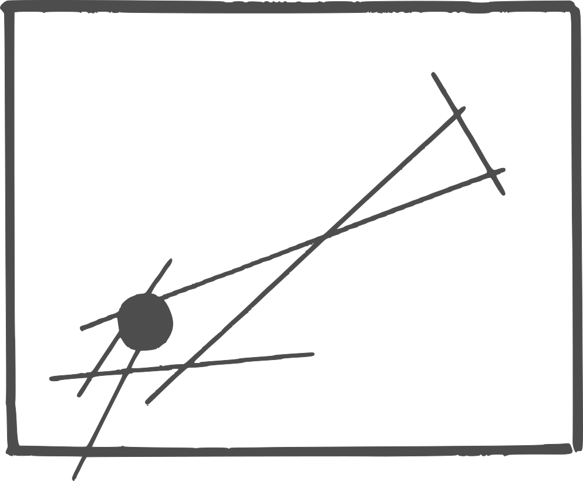

Cine libre, autonomía digital y privacidad.
Este artículo fue modificado por última vez el 01/01/2022

Internet se ha convertido en un auténtico basurero, donde encontrar información es —de manera intencionada desde buscadores y redes sociales— una tarea imposible. La publicidad, omnipresente, ya no pretende informar, sino deformar. Se confunde la novedad con lo verdaderamente nuevo. Los fabricantes fomentan la desigualdad, la contaminación y la vigilancia mientras se venden con campañas de inclusión, ecologismo y privacidad. No necesitas una determinada cámara para grabar cine o un determinado ordenador para escribir. No necesitas ninguna suscripción. Zine va sobre todo esto.
Introducción a los Thinkpad clásicos: el «único» portátil realmente libre
Reciclando un teléfono Android: tu propio mini-servidor portátil
Guía para escritores con herramientas de trabajo libres
La linterna mágica y el firmware que nos devolvió el cine